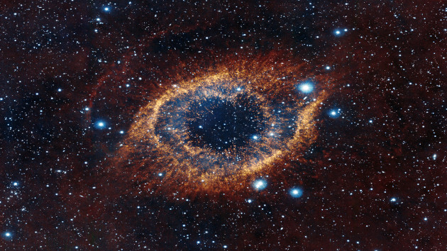
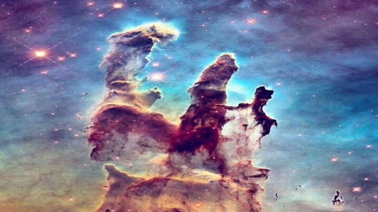

Nebulosas
Nebulosas são grandes nuvens encontradas no espaço interestelar formadas, majoritariamente, de poeira cósmica e gases, como hélio e hidrogênio. Algumas nebulosas surgem a partir da explosão de estrelas massivas e que se encontram no ciclo final de suas vidas. Essa explosão, conhecida como supernova, lança a matéria da estrela para todas as direções, dando origem a uma ou mais nebulosas, que podem apresentar diferentes formatos e extensões, podendo medir desde o tamanho do Sol até algumas centenas de anos-luz.
Quais são os tipos de nebulosas?
Existem diferentes tipos de nebulosas, com diferentes tamanhos e características. Os principais tipos de nebulosas são:
- Nebulosas de emissão
- Nebulosas de reflexão
- Nebulosas escuras
- Nebulosas planetárias
Confira abaixo o TOP 3 das mais fascinantes nebulosas já fotografadas:
Nebulosa Cabeça de Cavalo

A Bernard 33, mais conhecida como "Nebulosa Cabeça de Cavalo", está localizada a 1500 anos-luz da Terra, no Cinturão de Órion. A peculiaridade desta nebulosa, é que ela tem uma densa massa de poeira, causando um tipo de sombra escura que tem o formato de uma cabeça de cavalo.
Nebulosa de Hélix (Olho de Deus)

Esta é NGC 7293, mais conhecida como nebulosa da hélice. Esta é uma das nebulosas mais próximas da Terra. Ela está localizada na constelação de Aquário a aproximadamente 700 anos-luz.
A nebulosa de Hélix é uma nebulosa planetária que se formou a partir da morte de uma estrela. Por ela ter um formato parecido com um olho e estar bem próximo à Terra, alguns dizem que é "o Olho de Deus sobre nós."
Pilares da Criação

Os pilares da criação são aglomerados densos de poeira e gás dentro da nebulosa da Águia, na constelação de serpente. O nome, "pilares" é sugestivo ao formato do lugar, e a parte "Criação" originou-se devido ao local ser um enorme berço de estrelas.
Curiosamente, hoje estes pilares não existem mais. O formato da nuvem, sugere que a supernova explodiu há mais de 6000 anos e devastou as três colunas. Considerando a distância de 7000 anos luz da Terra, dentro de 1000 anos a explosão será visível daqui.
As nebulosas têm este nome pois os primeiros astrônomos ao tentarem observar alguns corpos celestes, como cometas, estrelas e planetas, encontraram algumas imagens que por não estarem muito nítidas, devido a incapacidade de definição das lentes dos telescópios da época, produziam uma imagem "nebulosa".(Para mais nebulosas Clique Aqui...)